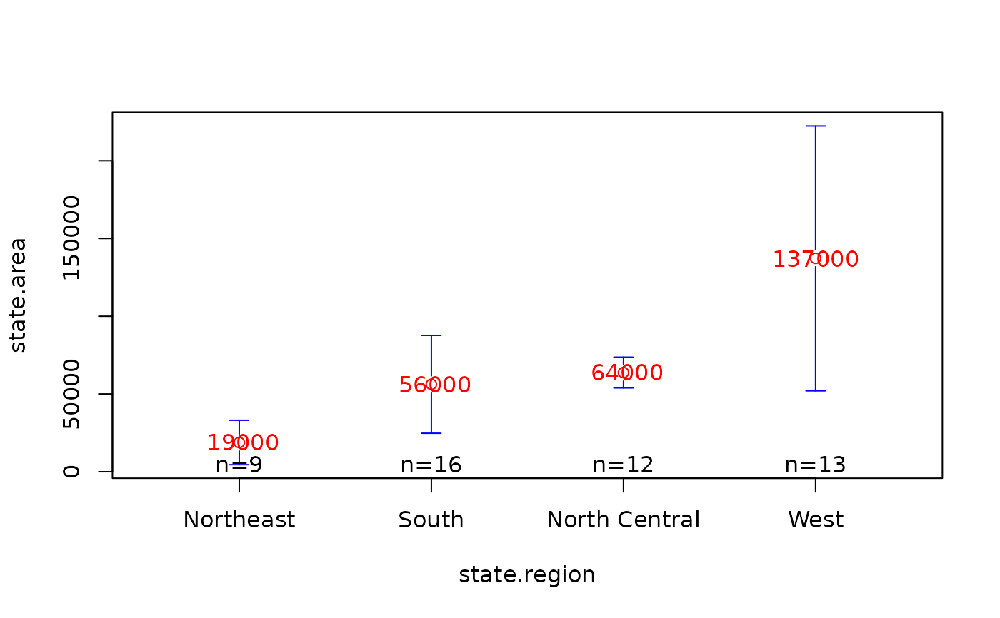
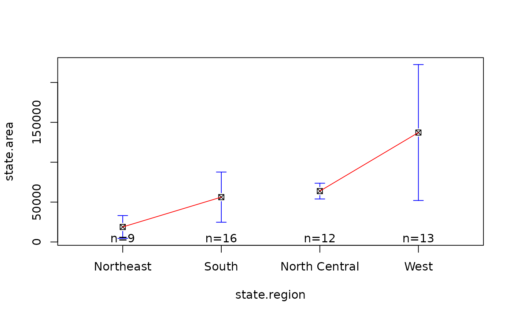
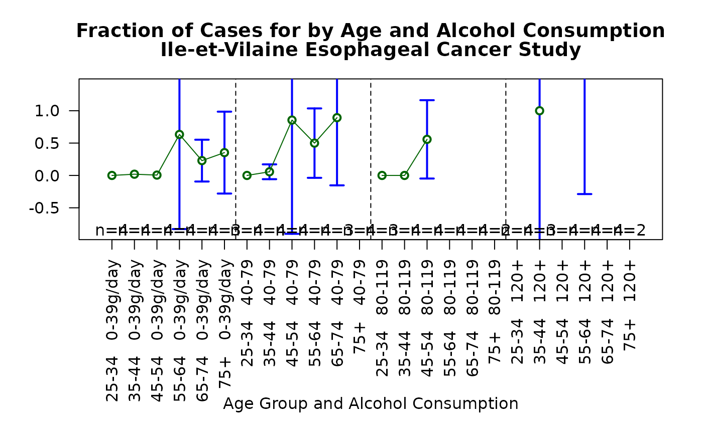
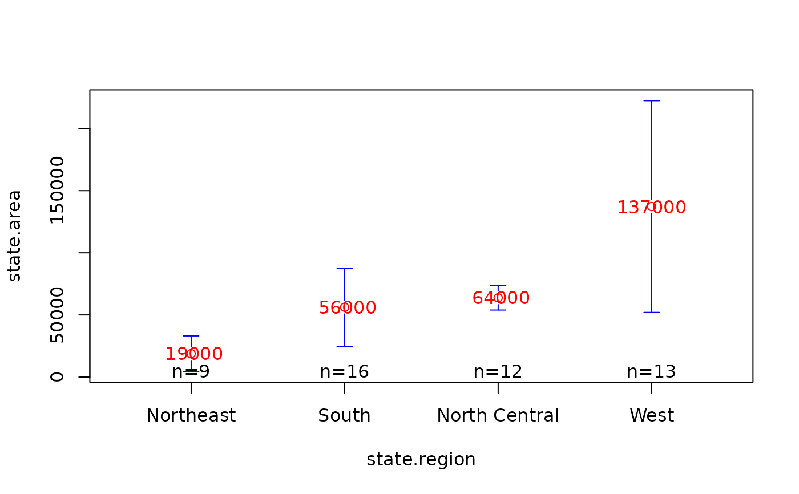
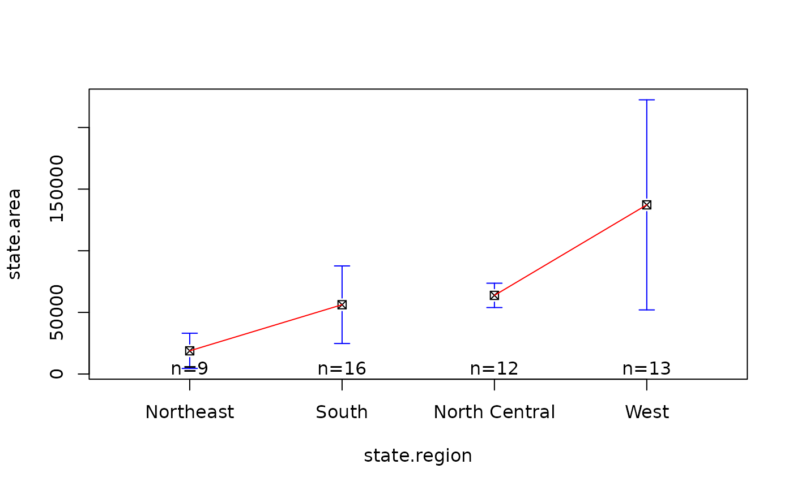
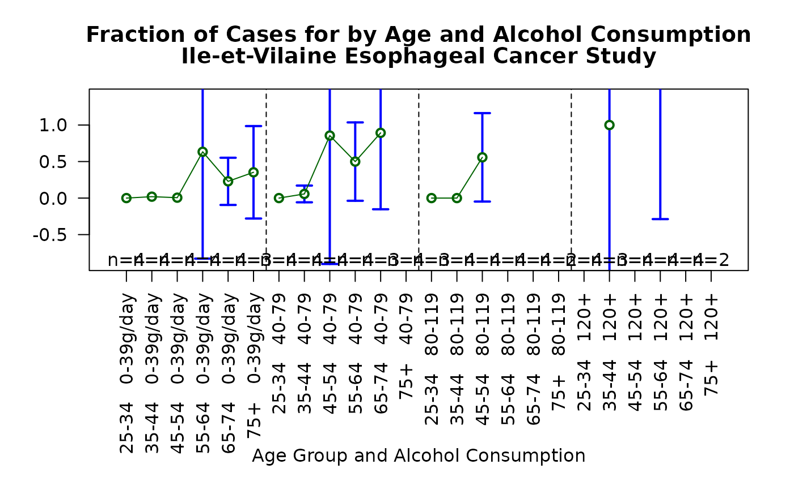

Plot Group Means and Confidence Intervals
plotmeans.RdPlot group means and confidence intervals.
plotmeans(formula, data=NULL, subset, na.action,
bars=TRUE, p=0.95, minsd=0, minbar, maxbar,
xlab=names(mf)[2], ylab=names(mf)[1], mean.labels=FALSE,
ci.label=FALSE, n.label=TRUE, text.n.label="n=",
digits=getOption("digits"), col="black", barwidth=1,
barcol="blue", connect=TRUE, ccol=
col, legends=names(means), xaxt, use.t=TRUE,
lwd=par("lwd"), ...)Arguments
- formula
symbolic expression specifying the outcome (continuous) and grouping variable (factor). See lm() for details.
- data
optional data frame containing the variables in the model.
- subset
an optional vector specifying a subset of observations to be used in the fitting process.
- na.action
a function which indicates what should happen when the data contain `NA's. See lm() for details.
- bars
a logical value indicating whether confidence interval bars should be plotted. Defaults to TRUE.
- p
confidence level for error bars. Defaults to 0.95.
- minsd
minumum permitted value for the standard deviation within each factor level. Any standard deviation estimates smaller than
minsdwill be replaced withminsd. Defaults to 0.- minbar
minumum allowed value for bar ends. If specified, values smaller than
minbarwill be replaced withminbar.- maxbar
maximum allowed value for bar ends. If specified, values larger than
maxbarwill be replaced withmaxbar.- xlab
x-axis label.
- ylab
y-axis label.
- mean.labels
either a logical value indicating whether the circles representing the group means should be replaced with text giving the actual mean values or a vector containing labels to use instead. Defaults to FALSE.
- ci.label
a logical value indicating whether text giving the actual interval end values should be placed at the end of each confidence interval bar. Defaults to FALSE.
- n.label
a logical value indicating whether text giving the number of observations in each group should should be added to the plot.
- text.n.label
Prefix text for labeling observation counts. Defaults to "n=".
- digits
number of significant digits to use when displaying mean or confidince limit values.
- col
color of cicles marking group means. Default is "black".
- barwidth
linewidth of interval bars and end marks. Default is 1.
- barcol
color of interval bars and end marks. Default is "blue".
- connect
either a logical value indicating whether the means of each group should be connected by a line, or a list of vectors giving the index of bars that should be connected by a line. Defaults to TRUE.
- ccol
color of lines used to connect means. Defaults to the same color as "col".
- legends
vector containing strings used to label groups along the x axis. Defaults to group names.
- xaxt
A character which specifies the axis type. Specifying `"n"' causes an axis to be set up, but not plotted.
- use.t
a logical value indicating whether the t distribution should be used to compute confidence intervals. If
TRUE, the default, a t distribution will the correct number of degrees of freedom for each group be used. IfFALSE, the a normal distribution will be used.- lwd
Width of connecting lines
- ...
optional plotting parameters.
Examples
# library(gplots)
# show comparison with boxplot
data(state)
plotmeans(state.area ~ state.region)
 # show some color and mean labels
plotmeans(state.area ~ state.region,
mean.labels=TRUE, digits=-3,
col="red", connect=FALSE)

# show how to specify which means should be connected
plotmeans(state.area ~ state.region, connect=list(1:2, 3:4),
ccol="red", pch=7 )

# more complicated example showing how to show an interaction
data(esoph)
par(las=2, # use perpendicular axis labels
mar=c(10.1,4.1,4.1,2.1), # create enough space for long x labels
mgp=c(8,1,0) # move x axis legend down to avoid overlap
)
plotmeans(ncases/ncontrols ~ interaction(agegp , alcgp, sep =" "),
connect=list(1:6,7:12,13:18,19:24),
barwidth=2,
col="dark green",
data=esoph,
xlab="Age Group and Alcohol Consumption",
ylab="# Cases / # Controls",
ylim = c(-.9,1.4),
main=c("Fraction of Cases for by Age and Alcohol Consumption",
"Ile-et-Vilaine Esophageal Cancer Study")
)
#> Warning: zero-length arrow is of indeterminate angle and so skipped
#> Warning: zero-length arrow is of indeterminate angle and so skipped
#> Warning: zero-length arrow is of indeterminate angle and so skipped
#> Warning: zero-length arrow is of indeterminate angle and so skipped
#> Warning: zero-length arrow is of indeterminate angle and so skipped
#> Warning: zero-length arrow is of indeterminate angle and so skipped
#> Warning: zero-length arrow is of indeterminate angle and so skipped
#> Warning: zero-length arrow is of indeterminate angle and so skipped
#> Warning: zero-length arrow is of indeterminate angle and so skipped
#> Warning: zero-length arrow is of indeterminate angle and so skipped
#> Warning: zero-length arrow is of indeterminate angle and so skipped
#> Warning: zero-length arrow is of indeterminate angle and so skipped
abline(v=c(6.5, 12.5, 18.5), lty=2)

# show some color and mean labels
plotmeans(state.area ~ state.region,
mean.labels=TRUE, digits=-3,
col="red", connect=FALSE)

# show how to specify which means should be connected
plotmeans(state.area ~ state.region, connect=list(1:2, 3:4),
ccol="red", pch=7 )

# more complicated example showing how to show an interaction
data(esoph)
par(las=2, # use perpendicular axis labels
mar=c(10.1,4.1,4.1,2.1), # create enough space for long x labels
mgp=c(8,1,0) # move x axis legend down to avoid overlap
)
plotmeans(ncases/ncontrols ~ interaction(agegp , alcgp, sep =" "),
connect=list(1:6,7:12,13:18,19:24),
barwidth=2,
col="dark green",
data=esoph,
xlab="Age Group and Alcohol Consumption",
ylab="# Cases / # Controls",
ylim = c(-.9,1.4),
main=c("Fraction of Cases for by Age and Alcohol Consumption",
"Ile-et-Vilaine Esophageal Cancer Study")
)
#> Warning: zero-length arrow is of indeterminate angle and so skipped
#> Warning: zero-length arrow is of indeterminate angle and so skipped
#> Warning: zero-length arrow is of indeterminate angle and so skipped
#> Warning: zero-length arrow is of indeterminate angle and so skipped
#> Warning: zero-length arrow is of indeterminate angle and so skipped
#> Warning: zero-length arrow is of indeterminate angle and so skipped
#> Warning: zero-length arrow is of indeterminate angle and so skipped
#> Warning: zero-length arrow is of indeterminate angle and so skipped
#> Warning: zero-length arrow is of indeterminate angle and so skipped
#> Warning: zero-length arrow is of indeterminate angle and so skipped
#> Warning: zero-length arrow is of indeterminate angle and so skipped
#> Warning: zero-length arrow is of indeterminate angle and so skipped
abline(v=c(6.5, 12.5, 18.5), lty=2)
